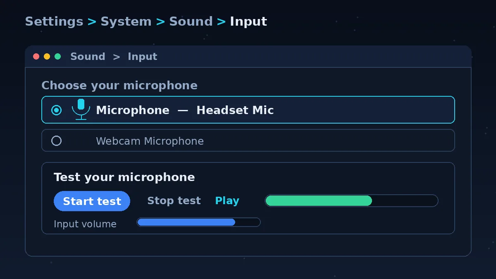
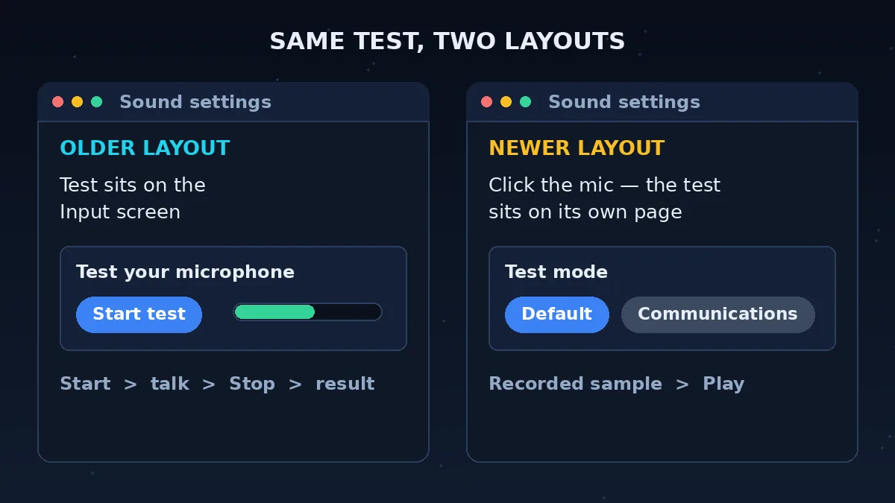
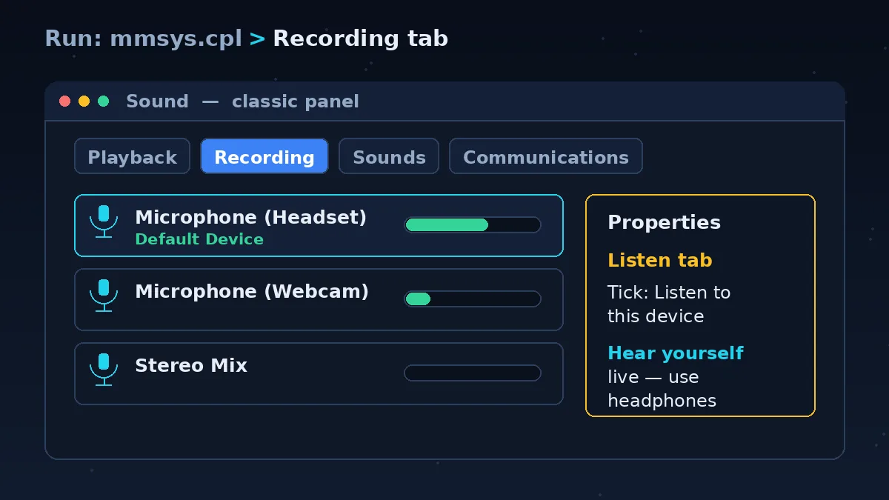
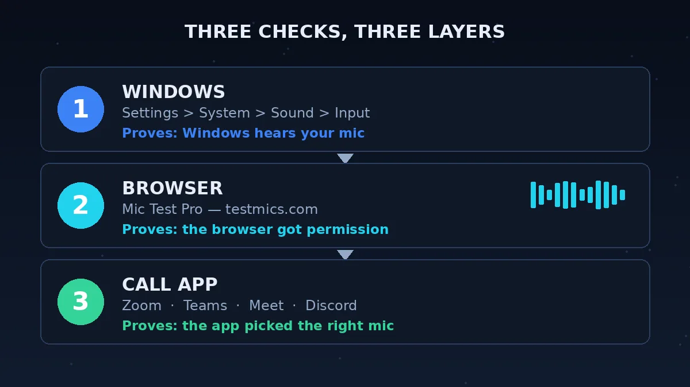
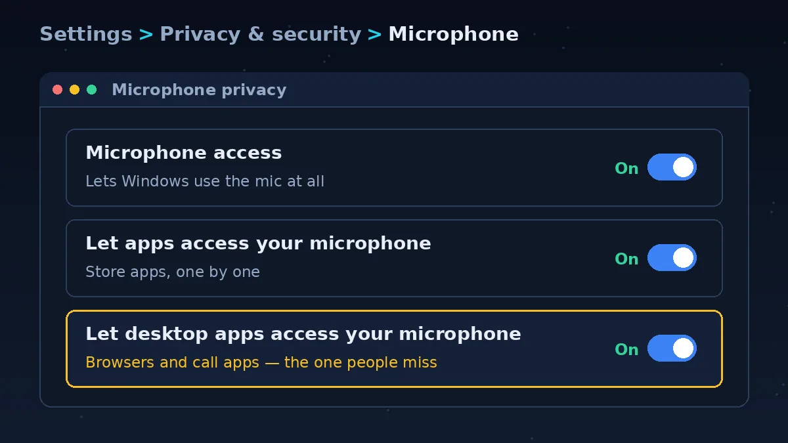

Mic Test Windows 11: The 5 Quick Steps

This page walks through the built-in test, the two ways it can look on your PC, and what its result does and doesn't tell you. It also shows how to hear yourself live. Then it covers a second check in your browser with the Mic Test Pro tool, which shows a live waveform, input level, noise level and latency, and shows the name of the device it is listening to. Fixes stay short here, with links to the pages that cover them in full.
You don't need to install anything for this one.
Open Settings, then go to System > Sound.
Under Input, choose the microphone you want to test. If you have more than one, pick the one you really use on calls, not just the first on the list.
In the Test your microphone area, press Start test and talk normally for a few seconds.
Press Stop test.
Press Play and listen to yourself.
If you sound clear, the test passed. If you sound faint, raise the Input volume for that microphone and run the test again.
If you heard nothing, or the bar never moved, skip ahead to the section on the three privacy switches below.
Your Screen Looks Different? Two Layouts of the Windows 11 Test

Windows 11 has changed over time, so you may not see the same screen as the steps above. Two layouts are common.
The older layout. When you choose a microphone under Input, the Test your microphone area with its Start test button sits right on that Input screen. You press Start test, talk, press Stop test, and get a result.
The newer layout. Here you click the microphone's name and a page opens just for that microphone. The test sits on that page. On newer versions it also has a Test mode choice (shown as Default or Communications), which changes how Windows handles the test sound. After you stop, there is a recorded sample you can play.
The names of the buttons and the number of clicks can change, but the idea never does. You pick the microphone, start the test, talk, stop, and press Play. If you can find a Start test button anywhere on your Sound settings, you are in the right place.
If you can't find it at all, check that Windows is up to date. Then open Settings > System > Sound again and click your microphone under Input.
What the Test Result Means, and What It Doesn't
Here is the simple version: if the bar moves when you talk, Windows can hear the microphone.
Some pages tell you the result should hit a certain percentage. Microsoft doesn't publish a pass percentage for this test. The numbers you see on other sites don't agree with each other, and none of them comes with a source. So don't chase a number.
The real test is your own ears. Press Play. If your voice sounds clear and not too quiet, the microphone works and Windows is getting it. If you sound faint, muffled or crackly, change one thing, such as the Input volume or how close you sit, and test again.
It also helps to know what this test can't do:
- It tests one microphone at a time.
- It checks Windows, not your browser or your call app. A mic can pass here and still stay silent in Zoom.
- It doesn't tell you how you sound to the other person on a call.
That last part is why a second check helps, and why the next section lays out your options.
Microphone Test Windows 11: Which Test to Use
There is more than one way to test a mic in Windows 11. Each one proves something different, and each one has a blind spot. Use this table to pick.
| Test | Where to find it | What it proves | What it can't prove | Use it when |
|---|---|---|---|---|
| Built-in Test your microphone | Settings > System > Sound > Input | Windows hears the mic you chose, and you can play the recording back | That your browser or a call app can use the mic | You want a quick first check |
| Classic Sound panel | Run mmsys.cpl, then the Recording tab | A live level for each mic Windows lists, and which one is the default device | How you sound, or whether an app can use the mic | You have more than one mic and need to check the default |
| Listen to this device | mmsys.cpl > Recording tab > mic Properties > Listen tab | You hear your voice live through your headphones or speakers | How you sound to other people. It can echo | You want to judge your sound as you talk |
| Windows recorder app | Start menu: Sound Recorder (called Voice Recorder on Windows 10) | An app on your PC can record from the mic | That your browser or call app can | The Settings test works but you want to record a clip |
| Mic Test Pro browser test | testmics.com | Your browser got permission, shows a live waveform, input level, noise level and latency, and shows the device name it is using | Which settings a particular call app uses | Windows passes and you want to check the browser |
| The app's own test | Inside Zoom, Teams, Meet or Discord | That the app picked the right mic | Anything outside that app | It works in Windows and the browser but not the app |
A good order for most people: built-in test, then the browser test, then the app's own test. If a test fails, you know which layer to fix.
How to Test Mic on Windows 11 and Hear Your Own Voice

You already have one way to hear yourself: the Play button after the built-in test. It plays back a short recording, so you hear how Windows captured you.
If you want to hear your voice live as you speak, use the classic Sound panel.
Press the Windows key and R together, type mmsys.cpl, and press Enter.
Open the Recording tab.
Right-click your microphone and choose Properties.
Open the Listen tab, tick Listen to this device, and press Apply.
Talk. You should hear yourself in your headphones or speakers.
Wear headphones for this. With speakers, the mic picks up the sound coming out of them and you may get echo or a loud squeal.
Turn Listen to this device off when you are done, or you will hear yourself all day.
The Recording tab is also worth a look on its own. It shows a level bar for each mic, and a tick on the one that is your default device. You can check at a glance that Windows is listening to the right one.
Windows 11 Microphone Test in Your Browser

The built-in test checks Windows. A browser test checks the next layer, which is the one a web call or a website will use. Do it after Windows passes.
The Mic Test Pro tool at testmics.com shows a live waveform as you talk. It shows your input level, noise level and latency as you talk, and it shows the name of the device it is listening to.
Open the tool above and press Start Mic Test.
Your browser asks for permission to use the microphone. Choose Allow. Nothing works until you do.
Say a sentence at your normal volume and distance. The waveform should move as you talk.
Watch the input level, noise level and latency readings while you talk.
Look at the device name. It should be the microphone you meant to test.
That last step catches a surprising number of problems. If the name is your webcam or a headset you took off hours ago, Windows is using the wrong microphone.
If the browser blocked the mic: you may have clicked Block on the permission prompt once. Click the icon at the left of the address bar, find Microphone, set it to Allow for this site, and reload.
A pass in Windows and a flat waveform here usually means the browser permission. A pass here and a fail in an app usually means the app picked another mic.
Windows Says Nothing? Check the Three Privacy Switches

If the built-in test shows nothing, don't start tearing up settings. Three privacy switches can block your microphone for everything, however well the rest is set up. They are in Windows settings under Settings > Privacy & security > Microphone.
Turn on all three:
- Microphone access
- Let apps access your microphone
- Let desktop apps access your microphone
The third one is the one people miss. Browsers and many call apps are desktop apps, so this switch often decides whether they can hear you.
After you change them, run the test again. Some apps need a full close and reopen before they notice.
That's the short version. Our Microphone Not Working page walks through all three switches in full, and what to try after them.
Test Mic Windows 11 Shows a Flat Bar or Quiet Sound
Once the privacy switches are on, three things cause most flat or quiet results.
The wrong default device. Windows may be listening to a webcam or an old headset. Go to Settings > System > Sound > Input and choose the microphone you want. You can also check the default device on the Recording tab of the classic Sound panel (mmsys.cpl).
The Input volume is too low. Raise the Input volume for that microphone and test again. In mmsys.cpl, open the mic's Properties and look at Levels for the same control in the classic panel.
Windows needs a second opinion. Windows has a built-in audio troubleshooter in Settings. It can catch problems you won't spot by eye. The Microphone Not Working page shows how to run it and what to try next.
Change one thing at a time and press Start test again after each change, so you know what fixed it.
Works in the Test but Not in Zoom, Teams or Discord
If your voice sounds fine in the built-in test and in the browser test, your microphone is fine. The problem lives inside the app.
Two causes are most common. The app picked a different microphone, often a webcam mic or a device that isn't plugged in anymore. Or the app has its own mute switch, which is separate from Windows.
Open the app's audio settings, pick the same microphone you just tested, and check that the app isn't muted. Each app puts these settings in a different place, so use the page for yours:
Windows 11 Mic Test FAQs
How do I test my microphone on Windows 11?
Open Settings > System > Sound and pick your microphone under Input. In the Test your microphone area, press Start test, talk for a few seconds, press Stop test, then press Play. If you can hear yourself clearly, Windows is getting your voice.
Where is the microphone test in Windows 11 Settings, and why does mine look different?
It's under Settings > System > Sound > Input. On some versions the test sits on the same screen as the Input list. On others you click the microphone's name and the test is on that page. The layout changes between versions, but the steps stay the same: Start test, talk, Stop test, Play.
What percentage should the Windows 11 microphone test show?
Microsoft doesn't publish an official pass percentage. Other sites quote different numbers, and none of them has a source, so don't rely on them. Press Play. If you sound clear, the test passed.
Why is the bar not moving when I test my mic in Windows 11?
Windows is likely not getting any sound from that microphone. Check the three privacy switches first: Microphone access, Let apps access your microphone, and Let desktop apps access your microphone. Then check you picked the right microphone under Input and that nothing is muted. The Microphone Not Working page covers the rest.
Why does my mic work in the Windows 11 test but not in Zoom, Teams or Discord?
The Windows test checks Windows only. The app may have picked a different microphone, or it may have its own mute on. Open the app's audio settings and choose the same mic you tested. Our Zoom, Teams, Meet and Discord pages show where.
How do I hear myself on my mic in Windows 11?
Press Play after the built-in test to hear a recording. To hear your voice live, open mmsys.cpl, go to the Recording tab, open your microphone's Properties and use Listen to this device. Wear headphones so you don't get echo, and turn it off afterwards.
How do I fix a quiet microphone in Windows 11?
Raise the Input volume for your microphone and run the test again. Also check you chose the right microphone, and sit closer to it. If that doesn't work, run the audio troubleshooter in Settings. The Microphone Not Working page has the longer fix.
Do I still need an online mic test if Windows already tests my mic?
It helps. The Windows test shows Windows hears you, but it can't show whether your browser can. An online test like Mic Test Pro checks that next step. It shows a live waveform, input level, noise level and latency, and shows the device name. Use it after the Windows test passes.